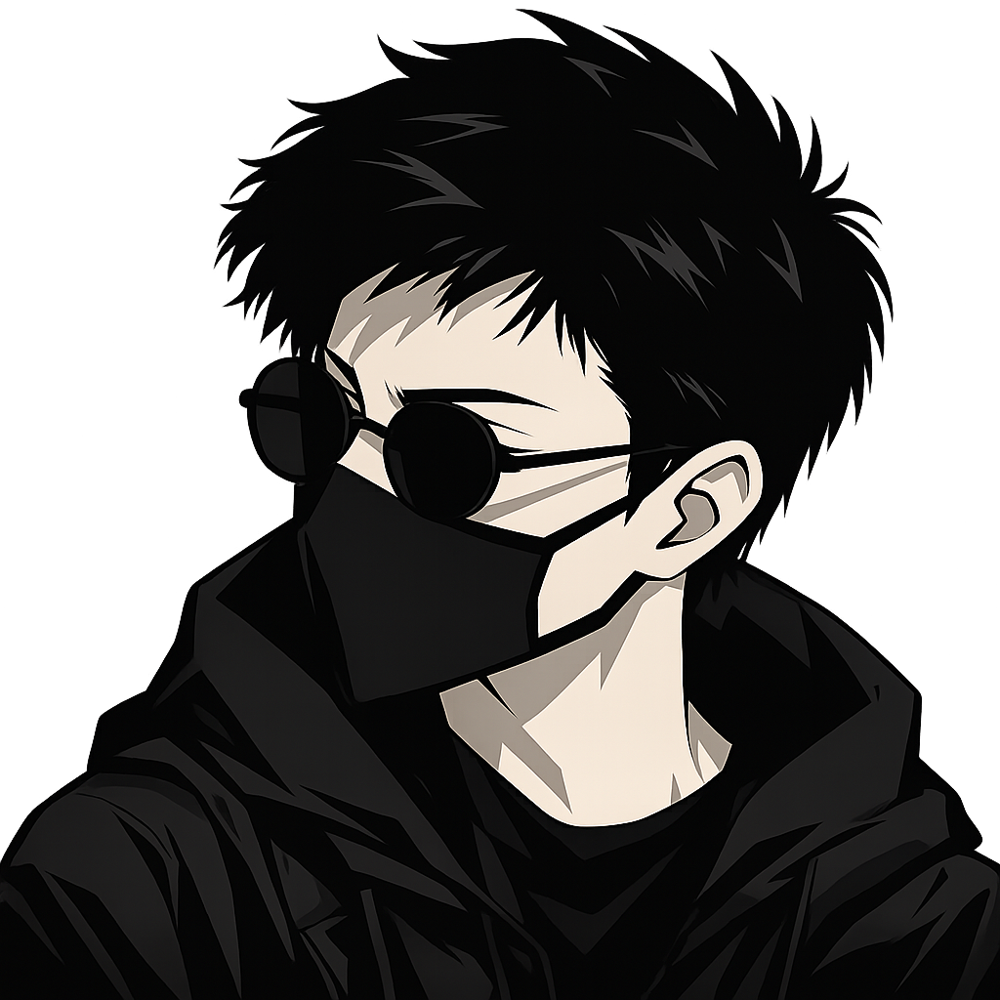

Merhaba, ben Yunus / liseli bir geliştirici
Mutlu olduğu
şeyleri yapmaya
çalışan birisi.
Sistem programlama, yapay zekâ, müzik ve oyunlar arasında üretim yapmaya çalışan birisiyim.
01C / Go / Python
02Linux ve açık kaynak
03Müzik ve oyun
01 / portre

Yunus Taş2026
Aslında buna benziyor görünüşü. Maske ve gözlük taksa birebir aynı.
02 / çalışmalar
Denediğim şeyler
Hepsi GitHub’da açık kaynak olarak duruyor.
01↗
02↗
03↗
04↗
05↗
06↗
07↗
08↗
09↗
10↗
GitHub’da tüm projeler ↗
yinit
Linux için hafif init sistemi ve servis yöneticisi.
C · LinuxTürkçePython
Türkçe sözdizimli Python yorumlayıcısı ve transpiler.
Python · DilEasyLinux
Linux’a yeni başlayanlar için çok dilli yardım uygulaması.
Go · Fyneris-supervisor
RIS init sistemi için servis başlatıcı ve yönetici.
Python · Unixark
.ark paketleri için dağıtımdan bağımsız paket yöneticisi.
Go · Package managernuve
Türkçe sözdizimli programlama dili ve GUI kernel araştırması.
Language · GUIMod Studio
Kod yazmadan Minecraft Fabric modu hazırlama aracı.
Tauri · SvelteUnityExtractor
Unity oyunlarından varlık çıkarmayı deneyen araç.
Game toolsDosya Yöneticisi
Türkçe, kişiselleştirilebilir grafik dosya yöneticisi.
Python · PySide6GPU Yöneticisi
Linux’ta grafik modlarını otomatik yönetmeye yardımcı araç.
Linux · GPLv3AG
ArchGate Indie Team
Oyun geliştiren
küçük bir ekip.
Arkadaşlarla oyun fikirlerini denediğimiz, prototipler yaptığımız bağımsız ekip.
03 / müzik
Dinlemek istersen
Buradan doğrudan dinleyebilirsin.
Risen remix
remixRevisiting the H E L L
originalAn Ultrakill Remix
fan-made remix04 / iletişim
Bir şey yapmak
ister misin?
Proje, oyun, müzik veya sadece merhaba demek için yazabilirsin.